<html><head><title>Pediatrics</title><style>body{font-family:sans-serif;padding:20px;background:#f4f4f9}.chapter{background:white;padding:20px;margin-bottom:30px}.q{border-bottom:1px solid #ddd;padding:15px}.correct{background:#d4edda}</style></head><body><h1>Pediatrics</h1><div class='chapter'><h2>Questions 1 - 34</h2><div class='q'><p><b>Q1:</b>                         ?                                          .                       ?                      .                          .       ?           ,            :                     - -   ?                     ?             _______   --      -     .                    .        ?          ' - '  ?   ,                           .              .                .             ?   --                               .      ,              ,       .      . Å. ‚                    ?                -.   ,                  .         -          .                        ?        '        :         ',                                         . Å      ?              .  ,              .       ?   --           .                         .            .                 ?                     .                   ?                  ?       -  -                    .                        .                '     .    ,             .              '  ?                           .                -   .             .    ,                .             ?                  -                ,                      ?                        .             ,          ,  ,     .            ,          ,          .           ?          -                      .       ?        -  , --         .      ,           ,           . ,   ,        .          .    ,                     .       ?                                                .         :                  _____.                 .                 %.                                ______           .        ,                     .                   ?   --               .                      . ,                ,          .                     Å. ‚       ?             ,          ?                            .       '                              .         ?                          ?            -- .         ,          ?  -'          '.             ?                     ?   --                  .                 -- .          .      , ,   .     ,               .        .        ?                _______.                   -     ?             ,          .                   ? </p><br><br><br><br><br>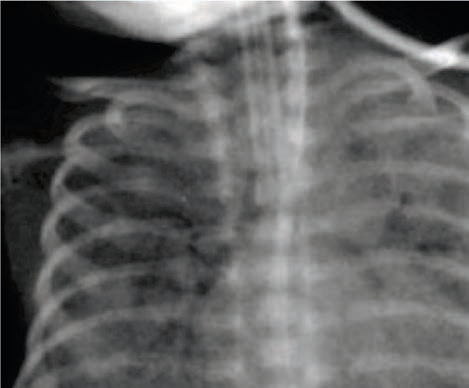<br><br><br><br><br><br><div class=''>a) &; /</div><div class=''>b) &; /</div><div class=''>c) &; . /</div><div class='correct'>d) &; /</div><p><i> •                      Å    ...</i></p></div><div class='q'><p><b>Q2:</b>          -      ________  Å          ,     ‚    ƒ                           . „        ….†. ‡                ? 20        -- Å       ‚.ƒ  , ,          .                ?          ,                .      / ,                     .          ______ a)                             .             ?                .          -               .           ,             ?      -               .                     .                           ______         .            -Å.      Å   ÅÅ   Å        ?            -          - -            ?  „,  …- -        ,              .                 .  †-        .       ?         ( †‚)        ‡ Å     _______             ? 181  ‡ˆ- -                   .               ‰   Š‹, ƒƒ,+†„.              ?           '                 .          .           .  ,      ,  , ,      ,    .         -     Å   .       ‚ƒ    ?        Å   .           .     ,      .                ?                  .                   ?   ,  -             .                          .            ?     ƒ               .                              ƒ  „  .                .                    ? 325  ,               Å  . ‚      ,           .        ƒ„        .                ? 349                   .          .                             ?   „…--          †              .    ,             .            ?                           ?             -  -              .  Å          ‚    ƒ , „-  -          …†‡  „.             '  ?              ______.               ,                __________.                       ?   - -                              .                  ?  Å‚-  -           Å‚ƒ° „    ƒ . …           . …                        .        -      -          .                    '   ?                  . ‚      ?    -   ,                ,               .                  ?                   .              .              .                     ?              .                       .     ,                   -          .            ? 617     ,                             .                         _________.             , '   -  '.              ?       --        .                         ?                 .                 ? 691 d)                      .          ,                 ?                    '           .                   ?   Å- -            ‚ƒ„           …     ,           . ‚ …   ,           ,  †  ,      .          .                       ? </p><div class=''>a) ‡      </div><div class='correct'>b) ˆ        </div><div class=''>c) ‡     </div><div class=''>d)       </div><p><i> ‡-               ,       ’ ...</i></p></div><div class='q'><p><b>Q3:</b>           Å                    _____  . a)  Š                     ….‹†. ‡           ?   Å       …†- -   ,                         . „     ,           ‡.        ˆ‚ /         .                   ?                 ƒ ? 56 c)  Å     ,     ,                    .                             ‚.                ?             ?     ,     -  -          .                       /                '  . ƒ          „             ? d)         - Å   ƒ?   ‚--           ƒ„   -           ‚  . ƒ …  ,    -                 .                 ? 131  „  - -        ,      ,  ,    . ‹  ,              .       /                ? 151  ‚              ? 167              ,                  -     . ‚   -       -  . ƒ            „     ,               .             ?  Ž             „- -  '         .                             . Ž                  .             è : 213                            .   .     ,          : 238   '                            .        ,           .               ? 260                     ?  296         Å‚         ,        ,     ƒ  . „                 … . Å …  ,        . „  …      .       …         '   ?        ,   - -            .        ƒ       '  ?   ,        †                       .              ?   ‚                            . ƒ                .                         . „                 ___________ 371  ‡  Œ    ,          ç   ,        .     ,    ‚ , Š/‹Ž†       . Ž         .                    .           ? 384  402 ‚     Å       .        ,   ,      . „    ƒ   ,              .                           ?  Š    ,      ‚‹      ,       ,   ,        . Œ ˆ  ,           "   "    ˆ-   .        ? 422               '    .'                     ?             ,         Å        ‚‚  .                     . ƒ „   ,   ‚    ,     ,        . …       . ƒ     ,            ‚  ?  …   †-             .         ? 479   - -                 . Å    ‚ ,        ƒ    ƒ  ƒ. „  …        … .         …   “  -  ”                       .                    ? 502                         .               ? 525   …--       -               . †    ,              .                  . ‚             ? 538         -- ,   ,        . Å    ‚  ,     ƒ                            .    ,            . „             .           …       '   ?                    ‚-      ? 595                         ?  „--                               … .    ,         †…     . ‡              ?                        ? 640  ‚     ƒ- -            .                „   . … †  ,         .        .                   '    ?   ,                 .       „        . „              .            '   ?     ‚          ‚    ‚     -  . ‡    ‚         ˆ    ,                . ‰       ‚                              ? 705           …  „?                ? </p><br><br><br><br><br><br><div class=''>b) ‡'       -          .</div><div class=''>c) ‰    '                    .</div><div class='correct'>d) ‡'              .</div><div class=''>a)             ' .</div><p><i> † Å              & ;.‚ Š . •     (& ;  ...</i></p></div><div class='q'><p><b>Q4:</b>  ƒ ,   - -         Å  „…†    .            ? 4      ,        ,    Ž.†        . ‡          ,                  ?  39           ‡    ?  Å-…       -       ƒ      †‡‡.                ƒ        .           ,            ?  …                 ? 68                   ? 83  101 †            . †         ,                ?               ( …).       , …    : 117        ‡           .    …           .                  ? 132  „             .               -   .       è.               ?   è- -                     .  ê   ,       ‡‘ /         ‰ ‘ / .          (’) ê   . ‚      ?   †  ,            ,                         „   .         ,                       .        ,             .     ? 182                  .  è ,        ,        ,    ,            ,        .      ,           è       ?        …--            ?                      ,                   ?  …                  (†‡)     .             ? 280   ˆ--               -      „  . ‰‚,      ,   .                  ?            ,    ,     ˆ ƒ           ‰ Å     .    ÅŠ. ‰       ƒ    ,                   ? 326   ‹Œ--     çŽ                 .               .                  .      ?   - -                            .             -  †   . ‡       ?   „‘--                         . ’                                      . ‹        Œ          . ƒ         .           ?                  ‡ˆ‰        ?                      ,     ?                  _________   . 448  457          ‚‚  ‚       .           „     . †           „          ‡ˆ' Å   ?  Å      ‰-  -              .       ˆ        †-    Š Š    .       '       ?  ƒ  ,      ,      Ňˆ       -             .      …         … ‰ ƒ  ƒ.                     -       ?           -                   …‰?              . Å         ,            ‰  ______.  579 †    …     ‚        ?          †-                     . ‡    ,     ,           .              .                 ?  „                  .            †    ?  627                ‰                 . ˆ           .    Š‹       . ‡              ?   ,  --           ,               . Å     :  661  ,  Š--            .                      ?  ‡    --            .           ? 692       ‚   †- -     ‚     ‚      ‹        Œ  . ç ˆ    ,          ‚                   . ç     , -                 …-       . ‰                       ?         Š                . ‹            ( …).           719 …?  734  Š- -                             .                …        ? </p><br><br><br><br><br><br><br><br><br><br><br><br><div class=''>a) ‹   </div><div class=''>b) ‰      </div><div class=''>c) ‰        </div><div class='correct'>d)        </div><p><i> ‹          ˆ                 ...</i></p></div><div class='q'><p><b>Q5:</b>  †         ,        ‰  Š            .                   ?                            . Š Š     ,         . ‡                ?   ‚- -         ‹„                 .    Œ   †  ç  …  Ž  ,   .                    ‚è .       ?            ƒ               ? 57    -             .          ,      . …                          ?   - -               . …        . …      ˆ„          ‚‡ .                  ?                   .                 . ƒ                             ?  ˆ       -  -     . ‰          -ÅÅ- - (…Š )  Å    . ‰    Å ?   ‹--        ,                         .             Œƒ    ?  ’ †-    “- -               ” . ’          ?             ”           : 168                .    ,               . ˆ      ,            ‰%                   „.            „        ?  Š„- -      è      .                            .  “        ,                 .                ’    è  _________ 214        -       ‡, ,  .             ˆ  .  ,    ,             . †       ,  ,         .        ?                   ______           -  ƒŠ?          Š      ‹                -   ? 297    ƒ,               . Š '                    .    ,   „          .        ƒ      '   ?  350  -                              .             .             ?        -     '      . ‰ ,               ,      ,   . Š                      .   ‹       Š          . ‡                ?                     -ê          .     ,                       .         ‚  -                     ,  ŠŒ      . ‰                 . „ ƒ   ,  ƒ  Œ  .           Ž       ?                ,             .   ê-    .         ?  ‰       ,       .                   ?                ______.  Å         ˆ        .  ˆ       ,           . ‚   Ž            .           Ž  ?                        ?                        ?   ‹--                    .                . ‚      ?  †  ‚      - -                 ‚      .    ‚   Œ     .       .         ?  ˆ                  ‚-           ____________  .  „                            ˆ     . ‰              ?                     -    . è                     .    ,  Å--   -        ,        . ‡               ?                 - .                     : 641  ‚            ‰‡. ‚          .               †  .       .            __________.                          .                 .        .     ,           .          ,                .       ? 693  ‰                           ? 706          Žè        -               ê          .        ?                                         .             -                   ? </p><br><br><br><br>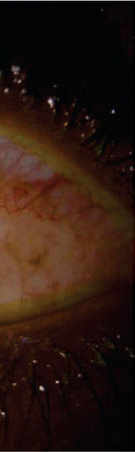<br>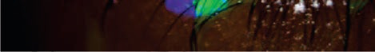<br><br>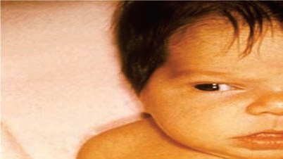<br><br>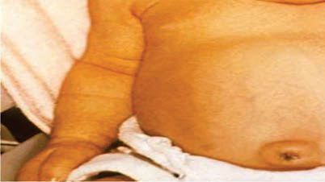<br><br><br><br><br><div class='correct'>a) ƒ    </div><div class=''>b) ‰       </div><div class=''>c) ‚          .</div><div class=''>d) Œ         -     </div><p><i> †            Å  Š     .‚–     ,  Å   ...</i></p></div><div class='q'><p><b>Q6:</b>  †        Å    Å       .                        ?   - -            ƒŽŽ          + Ž         . ‡                  ? 21                       .            ? 40                         … ƒ        .              ƒ    ___________                  .       ,        ‡ . ˆ     ‰        ,          .                     ? 69         Œ -Å‚            ,    . …          †      ,        .       ç-               ?  ƒ                 ?            -Å. ‰ Å    ƒ         .      -         ? 118   ‹--        ƒ„      ,  ‘   ’ ,      . „   …           ,         .                    …      ? 133  ’             ˆ            .         –   . ’ †-        .           ? 152   - -              .                    ê.      ,             ,               . ‚          ?                 .              ,                     .     ?                   „Š  ‰         ’    .                   ‰   ‰ „•.                  ,                              . Å      ?       '          . ‚   ,   .   ,                Å  .             :                                 ? 261              ‡  Ž      ˆ è- ˆ  ƒŠ?   èê--        ƒ-       Š   .  ’          Œ           .      .                          '   ?  Œ        牋Ž     .    ,     ,       ,                   .                 ' ?  ,                     .          ,                         .  ‰ƒ‰Š          .                   ?   - -                . ‚         .                  . ƒ ‹   ,            ,                 . ‡        ?                , :  ‚ Šê- -         -        ,           . ‰             Ž .                -       .                ? 403  423 ’-  -  “             . ‘                            . Œ ˆ  ,     ˆ           .       ”.•    ‡Œ’   ”%   . † ê-   ' '  .            ?  ‹        ‡.ƒ            .             ,                 ?     ‚   ‚               . ƒ „     ‚‚ ,         ‚  „ :        ˆ   -  ,               .               ? 480   ‹- -             .         ‰ ƒ  ƒ. Å Œ  ,    …       . ç         -       .                ?        Å- -             …‰   . …            ,                       .                  ?  ‚               ? 539  †                 Ž   .              ? 580  596 Š   ƒ‹             ,      Œç        . Š           .         ?  ,  ç--            -           Ž   . ‡             .             †- 618  628    --          .                    .              . è   -            .    ,         . ‡        ?      Œ--           ,         ____             .  ‚                                  .    Ž               .             . … †  , †             .            662 .                ?   è--        .         . ƒ,              . ê             . ç    ƒŽ   ‰‘‘‘ …’.       ?   ‹,  -     ‚  ‚         ç ê ‚            .       ‚       ‚        ‚         ‚         ‚ .                         . ‡    ‹          - . ç ˆ    ,     è                                . ‰                            '   ?  „            .                             ,                .          ,           . …     ç    ,      .                      ?                                ? </p>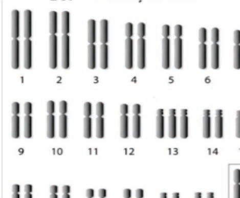<br><br><br><br><div class=''>a)       </div><div class='correct'>b)   -     ˆ     </div><div class=''>c)  -  ç   </div><div class=''>d) Œ     </div><p><i> “        Å .              ...</i></p></div><div class='q'><p><b>Q7:</b>                .      .          Å            :  ê       ,                . ‡       ?  ‘            †             …† .                .                           ?  …   ƒ,  ÅŒ …    ,    ç  Å            ƒ    „ . ‡  …       -   ƒ     . Ž ƒ ,        .              ?  Œ             .            ?  †         ,        „             „     . ƒ                „         ? 102    '              .        ( )     .   ,          Å    .     Å   ?  “                  .                        ˆ        ??  „        , ‘ –   ‰—- -      . ’                . ‹  ,              . ˜                 .              ?  ‚            ( )-           (ƒ„)?   Ž--            .  „-          .               ? 183  Å         è,           ‰      “  . Ž   –                 . Å     ? 215  239  …--        .  ,           Š      .              ?   Š‹--          ,  ,    ,    . ‚     Å  Å              .     ,             Œ   .             .            ?         ,               -          (ꇇ).                       ?          ”  ' ?  327  -  -           ,  ,   ,   . Š '                   ,   ‚      ƒ   .    ,               .           ' ?                   . Š                “‰”    è…      .       351              -      ?  372   , ê- -                          ƒ       . ‡                  ƒ?  ƒ,                               .                    . ’            385    .    ,      .  -            . Š           -               ?               .                       ?  ‰                  ç    ,       .                    .                         ? 449       ‚  è- -  '  .              ç          . ƒ „   : 458  …Š-‚        _________.   - -    …            Ňˆ              .     ƒ  ? 503  , Ń- -           ,  ,     .           …‰. Œ   ,       ç  ÅŽ‚/ÅÅ‚ . ‰                    .             ? 526        ‡ƒ                              . „             .                  . ‚                        ?  † ê--                   .        ,          …                  ?                    . è                 .              ?                _________.  --                                ê        . ‡            ?   ‰--                       .             ?  …      ,    ‚ ,  è--          ê-     †,  ,    . Œ           .                       .             .                ? 663  ê     ˆ- -                .       .                  .     ,           .              ?           ‹            (). ‡                      ,                     . ç ˆ    ,          ,     ,                   . ”            („•/†• ‡),     (–Å/ ),     . ‡         “—. ’             ‚           ()     - . ‰       ‚             ?  „        ”ƒ•.     , ,         ç ,             .     ,               ‚‹ƒ.         ? 720  ‹ ,                                  . ƒ …     Š%     . ‡  Ž-        . è          .                     ? 735 </p><br><br><br><br><br><br>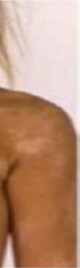<br>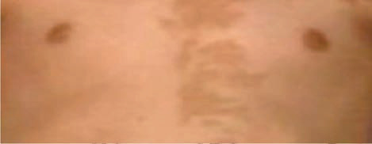<br><br><br><br><div class=''>a) , ,    </div><div class=''>b) , ,    </div><div class=''>c) , ê,    </div><div class='correct'>d) , , , ê,</div><p><i> †    ê.  ê. °è  ™     Å   . †   ’     ...</i></p></div><div class='q'><p><b>Q8:</b>  5 †  - -    Å  Å                 . ç  Å           .               ?  ‡               ‰? 22     “               ”         ‹„ . Š                   .                        ?  ê      ,         ‘’  ?                             . è                             .             "  "   "    "?  84                                       .          ’…’.                   ’…’?                     ?  ˆ                    ê  .      Å    ÅÅ          ?    …    ‹- -                . ƒ …  ,    ,   ,     ,          .      ’     ?  „ Œ- -       ‹‘ê. ’               •    . ƒ          . ‹  ,          .        .      ? 153         ƒ„…   ________   çè--                    ç-Œ‰     „  .        Œ-Ž      „      .                  .        ? 184  „—- -                        . Å            ?               Œ-  .                   ?  ç        , '           ',       ŠŽ--                 ‹.              ,  ,   ,           ,                   .              .        Å      è    '   ?                 ,       -        . ƒ                281       .                     ?   è--               Š . Å …  ,             . ”                   . „    ƒŒêê  . „             ,             ' .              ? 298              .                    ƒ.                ? 328   Ž- -         -            •  .       ,   -      . è            .                    ?   ,         - -  ,       . Š               . Š                . ‡     ç        ?             '                       .                      . Š        . ’           .                     ?  ‚                        Šç      . Šê    ,  ’     ƒ   . ˆ    -      ,   . Å -       ƒ               ,            ,          ,    ,     .             ? 404  —˜--  Ž       Œ‘Š  -            ˆ  . † ê-      .               ?                      ?   ‘--    ‚          ’  .             ‚         ‚       ‚   .        …‹    . …        ˆ. †        ?                 ƒ ?   è- -      -    ,     ,         .      ƒ     ƒ  ƒ. Å Œ  ,       ….    …     ŠÅ …     .                 ?                      ?  „,  --   ,         .  Š  ,   ,                      . „           Ž‹              .  è -       Š                 . ‚        Š           ? 540       ,      - …            . Å  ‘,                      ,           .          …              ?  Š   ƒ,                       .             ,    .    ,                         597  . ‡    ,               .     ,         ‘’Š ‰ƒ‰.                   ?             ç-    .              è ,                      ê-    .                  ?  629 †                  .          ,                       __________.   ‡‰--                       .   ,             .  ê-         .          ?     Œ…   ‡ †  ?  ” ,     ,                   †  .     , „            ƒ” •  .              ? 694     ‚    Œ-   ‚ ‚   ç ê                  •  . ’              . ’    ‚              - .       ‹               " ‚   ". ç ˆ    , ”        ‚ ‚.   ‚ ˜  ƒ“Ž       ŒÅ/        ™Å/        ‚     . 707 ‰       ‚   ‚        ‚ ‚'   ?  – ,                      .                    .                 蕇Œ   蕉Œ ç  . „               ?   ‘- -                           .                         ? </p><br><br><br>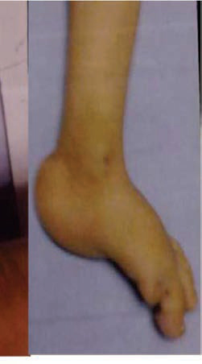<br>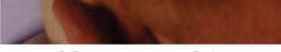<br><br><br><br><br><div class=''>a) </div><div class='correct'>b) … </div><div class=''>c) ‡   </div><div class=''>d) ‹…  </div><p><i> Š  Œ è (ŠŒè)            Å. ŠŒè    ...</i></p></div><div class='q'><p><b>Q9:</b>                              Å. †   ’  “ Ž   ,               ?                                 . ‡      ?                         ?  58 Å‚- -   …       -     -     .                       / . ‘             ,       ƒ  . Ž ,              :     ê          .                    .                    . Š                      .      ?         ,                   .       .    ,                        . ƒ                          ?   ,             Å      .                   . ‰          .                ? 119  • ç-           ’            .    ’     ? 134  ’      Ž- -                    . ’              . ê               ’ .           ?  169  ‰- -      Å,         ê         ‡ .      ,      ê                     . ‚                   ?                        ç?               .  è ,                . Œ                 ‰     ‰  . Å      ? 216   Åç--        -‡          . Ž        ˆ-     ˆ-  ˆ-   .      -         ?   ‹- -          ,    ,      .          . ‰             ’-    -Š-         ‘ƒ .            ? 262              ƒê-         .                       •      ?              . ”                              . •         ,                   ?   ˆ•-  -        ƒ, – ,         . Š          ˆ.“    . Š          ,        ,     .      ?   , ç- -         -      .    ,           .               .                 ?                       ,      -           ?  ‹     ,        ____ µ/  . 386  ‚                         ,  ŠŒ      .     ,    ,         ,        .    Šê   ,            ƒ           ”Œ%.    ƒ   ?                         .                _________. 424            †     .   ,                    . Ž            .                       ?             .        ,          ˆ     ?  Å       Š     ‹è                      ˆ,      ,         .  ˆ       ˆ         .               ?  Š ƒ,  ‹- -  ,                   …  …          . ç          ‰   ƒ               . Å    ‚ ,                           .    …         . ç        Š ƒ                      Œ               .                     Œ -  ‹ ,                        .            .             ‘        .                     .           …‰     . ˆ                .                  ? 527   ê- -      ,   ,  Œ   .  Š  ,       ‘ê.’           . ‚                                 ?  †    ‘    Œ  …            ,                             .           ? 581          ,               . “      Å-             .                   ?  "   "    _________.             .   ,       ”ˆ, ’èˆ,      . ‡             ?   …- -     ‘                   . ’   , è               ‡,‡†,††† / ‹. “             , 642      ,           ‡† (  ƒƒ ) . ’              ?  ’              ,           Œ-        .                        è--     †.             .                ? 664   ‹- -            .     ,    ,    ,  “-    ,        . Œ        .       .                    .         ?  ”  ,        ‚         '      ‚ '            ‚  . ‰          ? 708                  ?  ’             . Œ                       . ’      “- -. ’    -   -  .                    ? </p><br><br><br><br><br><br><br><br><div class=''>a) ‚     …        ’ </div><div class=''>b)      „     ’    ‘</div><div class=''>c)             ”   </div><div class='correct'>d) …   …                 </div><p><i> •      ’  “ Ž  ç  - ,          ,  ...</i></p></div><div class='q'><p><b>Q10:</b>                         ’  “ Ž  ? 6  ’              ,                  . Å    ,    “     ,              . ‡         ?  41             Å                 .                       ?                 ƒ     ,     ƒ . ‡ ƒ      ƒ ,         .                    ?  70 è    †- -    ,          ê        ’Åç“ ,                  .      ê           ê   ‡  (‰”)    _______ %? a)              . 85  †                 (ç‹‘)                   .            ,                                     . ƒ                ?    ,          -ÅÅ    ‹‹.  ƒ  ,   ÅÅ                   Å   .              ?   –--              ƒ„        .                 ? 135  „             .          ,         ? 154  ‚               ?            é- -           :  ˜                    .   è       ‰               - . ™              . Å             ™ ?   ˆ--       -            ,   ,   ,  ,       .              .        ? 240   Ž--                                .          .                                              . †   è       . ‰          .              -    .             ?  …            ƒê   ,          ƒê      .                       ?   èƒ--             . „                  . ” –-               .                '   ? 299  ƒ  ,   ,        . Š           .              .                     .     ƒ  '      . ‹     ,           ? 329  ,                       -       '       .          . Š                   ,        .     ? 352          ‘- -                     . ‡                ? 373                ”   . Š                 .  ‘   ,                    ?  ‚ Š--                 Šê   . ‰            .         ‹êê  ‹‹ê/  .     ƒ ?  -  -  ‡      -          ,     ˆ,        . ‘         . Œ ˆ  ,                       .  ê-    .               ?   †‡--    ê†Åƒ   ‘-              ‘-     .   ’'     . ’         ˆ  / ‚.                      .           .                ? Answer Key 450 Question No. Correct Option Detailed Explanations  ,  Œ-  -                          ‚  -           . ƒ „   ,   ‚              . Ž              . †                      ‚ ?  ‚              ˆ      _________. 481   ê- -       ‰         . ç    …    . „                     Œ      .        504  ?                       ?   ”- -       ‰,           . †    è ,             . ‚       ?  †        ,    …           …          .                 ?                           ______.                 .                       ? 619          ” -Š -†      _________.                  ,      ,      . Š                             .          ?  ‚                        “        .                       . …     ‰ ,          „     „  „ .          .           ? 665                             .            ? 695   š- - ‚       ‹   -‚              . —  ˆ        +++     +.          . ‰    ‚ ‚   ?             ,         .               . „     ,      ,  ƒ‹‹              .        ?                              •    ? </p>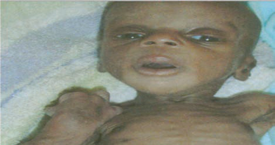<br><br><br><br><br><br><br><br><br><br><br><br><div class=''>a) „      •    </div><div class='correct'>b) „      •  …      </div><div class=''>c) „      • ’ ' </div><div class=''>d) „      •      </div><p><i> ç                   ’   Ž  ...</i></p></div><div class='q'><p><b>Q11:</b>  † . Š        - -    Å      .                 Ž   ,                ?        –   Ž  . ê                 . ê          ‹       . ‡                      –?   ‚ƒ-  -      ….Ž       ‚–     .        Å                     (Œ )      ?           ƒ      ,  ƒ               .              ƒ      .      ?                         ?            -  ,     - -        .          ?              ,   ’“”•        †–•     .                     103          . ”         ,             ?                     „ .              ? 120  “      Å--     ƒ„                     . ƒ …  ,          ˆ  .                       ?  „ ‰—- -             ,     ,      . ’            ‹    .                   ?  ‚                  ê     ê       ?   ’- -                    .  „  ,                            .                     ? 185  „š- -         -    ,      ,     ,   ‰,      . Å   ‰    ? 217        Å’--       _________   ‹- -                               .  è  ,   ,   ,  ,    ,   Å       .   è    .                . ‡      Å   .          ? 263  ‹       ƒê         . 282     -        -   („„).           . ”           ?  Š     ƒ  ƒ        .                   ?           ‘-    ,             ?   , ’- -                 ,   ,                     . Š                    .           ŽŒ“+      . ‡                          ?   —--                        ,           .    , -                    . ’       ’” .       ?  ‚                 ,    ƒ   ,          ,          .      ‰ ‚   ? 405                  ‰      ______. 425  459   ‚   è-  -     ƒ ˆ.               ,   ‚   ,    . •     ‚ ‚        ‚     -      '         .     ,          . †                         ?  Å        ˆ         .  - ˆ            .     Š    ?    …  ƒ        ƒ  ‰            . ç          .            “      ?                   .   ,      .                   .        ?  ‚               ? 541          ‚-   …     .             ?                   ‡è‰.      ______       ” . 598   ”--           -      .    ,            ê-”   . Ž”-      ”             .  ‡        •.‹  / . ƒ   …‰             .            ?              ,                      . ‡            ? 630                 .                    ,      ‹--            .          ,            ‘   ? 643  ‚   -         . Œ            -       . ‹         ‘Œ  . … †  ,        .                    ?                 _________.  ,      ›                . ‰             ˆ     ? 709  721 „           ”ƒ•        .                       . ‹   -        .                    ?  736             -     ? </p><br><br><br><br><br><br><br><br><div class=''>a)     </div><div class=''>b) ƒ   “   </div><div class='correct'>c) ‹     </div><div class=''>d) Œ -     </div><p><i> ‡                    ’  “ Ž ...</i></p></div><div class='q'><p><b>Q12:</b>    ’        ,        -     . •      -            .Ž ‘                  ……/  ”     . ‡                    –? 23      è†              Å     ‡.       Å -            ? 42               ƒ   .                    . ‹                   .    …  ? 59 Answer Key Question No. Correct Option Detailed Explanations       ê    ,           ,         .                 ê?   - -                                -               . …  ’                        . “               .                 ’   ?  ‹                __________   Œ--         ( …)       . •           .      .   ‚‚- -                       . ƒ …  ,              , ’   ,      .                 ?  „ “- -                          . ’            .      ? 155   - -     ‡‘ Å            . ‚                   ’ ’? 170  Š                     . Š   „            .               ?            ‰                .            . Å                    ‰  ?                     .  ”-Œ        .        -  .             ? 241            ,   ,                          .           ________   —- -                ˜    .        .            ƒê-  .                      ƒê?   ƒš--            Œˆ     .       ƒ  .   ‰„†    ,         ? 300                  .      '                    ƒ. ê      ,            .    ,       ,         .            ? 330                              . Š                     .     ,       .           ? 353   ”- -          . Š  ,           . -               . ‡        ‹              ?                  ”? 387  ‚       ˆ '   ,        ƒ:   ”-  -     ‰-    -              . † ˆ-           .   Œ  ,             ?     ‚   Œ“-  -        ,   ,       .           ‚. †                 ? 460         Š-      ˆ           -  ˆ  . ’                “      .  -     Š  ˆ       . ‚  Š     ______.  ’-… ,  -         -  528 •                     …‰. Œ ,            . …                ?  ƒ          ,         ”--                       . ‚            ?  †    ê          …   ,         .                …   582       .               . •                    ‚    .           …     ?  ‡        ,       Å--         .              .                  .             ?   Œ--                     .           †       ?            ”ˆ.     “„, •                      . ‡               ?   ‹--          ’“          ‡ . ‚ è     :  ‚ ,  è--     -   ,               . ‡      .               ? 666   †- -          . ˜-                 .     ? Answer Key 696 Question No. Correct Option Detailed Explanations        ‚    •- -              ,   ,   ‚  ,     .     ‚ ,          ˜     -    ‹             . ‡  ‚          è  . ’            . ‰                 ?  „ “‹                -            .               .                ?                          ? </p><br><br><br><br><br><br><br><br>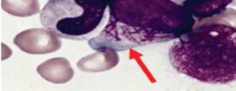<br>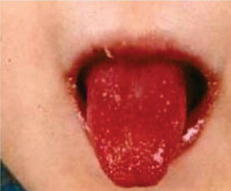<br>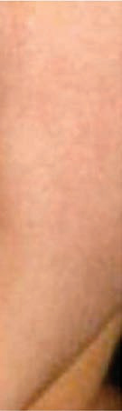<br><br><div class=''>a) è            ‘       -  .</div><div class='correct'>b)            -  .</div><div class=''>c)             -  .</div><div class=''>d) ‡            ‘       -  .</div><p><i> •  -                Å . Œ    , ...</i></p></div><div class='q'><p><b>Q13:</b>       ’ ?  Š                 Ž       . ‡               ?   ‚–-  -      ˆ                .     Ž          ‡ †  .               ?            ê   ê    ê  ? 71   Å‘- -          . ”     ,                 .             ? 86  † …--         ’•        .                . ƒ          ,             ,              ? 104   ‚         Å   Å   Å Å      Å  .        -ÅÅ    ‹Œ.ç .                  ?   ‚--               ’ .        ’       ? 136  „   -  ,       è           ,                 .                       .               ?  ‚                ?   Œ’--           -           . Š                     .                   ? 186             ê- -           . Å               ?   Å•--     -                     .  -  ꌑ           .              ' ?                                ,   ,      ,        .             Å               ? 264         ƒ™     ƒê. ƒ ‘„Å   ‰ˆ /µ.                     .               ?         ‘--                 . „                 . Å …  ,  '    ,   …     …   . „         . „   '   ,               .               ?      ,   ,        . Š            ˆ•  .                  ?   ‹- -                 .                       ?  ‡                      ?                    †. ’            ‚  .          ‚      . Š  '       ______.  ˜ - -                     Ž                     .  ƒ   , ,                       .            -     ‚. „     ,    ,            ™    .                ?             Œ‘Š         ˆ     .   ê-        .                    ?  †                   ? 461  Å ‰”- -                     ˆ. ‹    ˆ          Š  ˆ               ?   è- -          ,         . •          . Š  -‘Ž      ….      ƒ  ? 505           . ‰             . …              .             ?  ƒ         ,  ŽŽ--                . ‚                           ? 542  † ,               ,           …    .       , ,  ,                 .                ?  ”               _______.           ,  ç--        ,   ,            ƒ .                           .        ,    ‹%         .                †? 620 Answer Key Question No. Correct Option Detailed Explanations  ê--      .    ,           . è          „                       .           . ‡                  ?         ,                                     (çƒ)? 644  ‚ ”--                                . Œ          ,              . ‘    †         . …   ,        .         -  - -   .           ?  Š                        ›      .            . ‰                     ? 710                     ?   - -         ,     ,      .                   ? </p><br><br><br><br><br>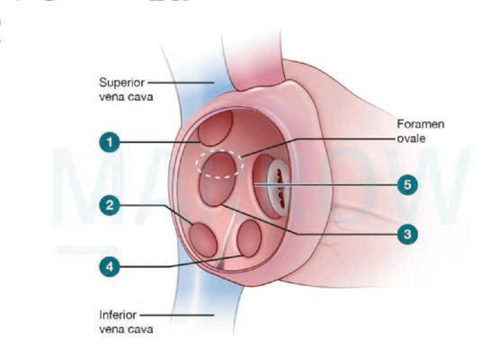<br><br><br>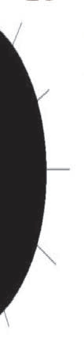<br><br><div class=''>a) ‰ - , –   - , Œ‰‡-  , ŒèŒ-</div><div class='correct'>b) ‰ -  , –   -  , Œ‰‡-  , ŒèŒ-  </div><div class=''>c) ‰ - , –   -  , Œ‰‡-, ŒèŒ-</div><div class=''>d) ‰ - , –   - , Œ‰‡-, ŒèŒ-</div><p><i> •   ’      –     . ‹   Å   -         ...</i></p></div><div class='q'><p><b>Q14:</b>  7 † ê-        ’  .      ’,   Œ'  ’  .               ?   . ‘                                  . ‡               ?   …—-         Å -        -       . Å             Å   .      ,     .      „   ?          „          „   . Š            ______.   Å‚- -                       . ”    ,          -Ž ,         .            ?  †                  Å--                    „      . ƒ                                  ?                  Å   Å              . ê   ,              Å      ? Answer Key 121 Question No. Correct Option Detailed Explanations             ,    ,     ’        ’         ,‚Å-…  .        ?  „ Œ--          - è  . ’  è            .            è  ?   ‡- -            •ƒ.                     ê     ‡‘  .   ê    -     ê        .      ,        ,   ,  ê         .             çŽ     ‰– çŽ   . ‚   çŽ     ?          †'  ?  218    ‰                 ‰     - ê     . Å                  ,              . Å               ?   ’--     ,   ,   .   ,            .     ,             ? 242   - -                        .  è  ,  Å          .     …-        .                      .              Å          ?               ™   ,    ƒŠ   ?   ™--                         . „                         .         ‚  .               '   ? 301  Œ          . Œ           ‹-    . Œ         – -–                        .            .                  ? 331   —- -                ꃊ   .                          ƒ„.    ‘-              .        ?  374  - -             ,       ,      ê . Š           -    . ‡                      ?   „è-        †         . Š                  .    ,             . ƒ            - Š-„„……‹‡/ƒ,     - ˜/ ,   -   ,   -   , Š-       -Ž       .       ?  ‚  , ƒ      ,                            . ‰              . ‚ †    ,              è     ƒ    .               .                 ?   - - -  -              , ,  ,   . Œ ˆ  ,       ‰•/,       .         ?   ‘-  -    ‚           -   . Ž    „      „                             .           . †              ?  482 ÅŠ  ,                 . ’               ˆ         . Å †-‡      ˆ . „         ˆ .       ?   ê- -       ƒ  “    -            . •  Œ  …   +++    +. Ž               ƒ              ?        –                       _____      .   —--                                . ˜ ’          -       .                       . ‚                  ‰?  †            ç'          ‹ …    .        Š‰  …          .            .            …    ,             ?                      .       . ç     ‚† •Œ/“   —+ ’.† •Œ/“. Œ                     ?  ‡            ?  Ž     ______.             †           ? 667  ‰          ›   ’               ?  „        .’-Œ                    . •               ? 722                       . ‚     ,    .                                 ? 737 </p><br><br><br><br>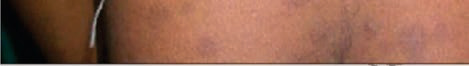<br><br><div class=''>a)    </div><div class=''>b)    </div><div class='correct'>c)     / ‹      </div><div class=''>d)        </div><p><i> †  Œ  ’           . ‹     ,    Å ...</i></p></div><div class='q'><p><b>Q15:</b>             çè– ’     -    .      '    ,          . †       ’   ?                         ”     . Å    , –           . ‡                    ?   ….è “      ‚ç     .                      :   , „- -    ,  ê    . …                     ‘  ?        .  ‹        ’    ________  ‰                     ?                     ?                      ,  ______   èç--       Å-     . ‚                 . ‚             .          „       ?           š- -     - Œ     è ?   Å—--   Š        , ,            . ê           ?   ‹- -               .  è  ,             ,      ,   ,      è . ‘         . ‘                                     ,           .                       ? 265        Œ-      ‡ƒ‘    š  .          –‘“       ƒê   . ƒ  ‘„Å    %.                   ? 283                        ’  .             ?       牋Ž                  . ‹Š             . ‹   ‹Å‡    .                ‹…?   ˜•- -                 -                  ,   ,   ,    .  354   ,               ,    è        . “        .               ?    ,                                .             ,          . ‡                ?   è- - --       Œ .   /   . ƒ        . Š         _______.  406 ‚        çê           -  ,         . •      .     ,               .    -‡   .     ?  426                   ’ .          ˆ        .                   ?               ‚            ,       ‚     . ƒ   ,          „           , …Š‹    „                   . †   ‚‚   ?    “•- -      '    ,     Š ˆ:          Œ -          ________. 529  ™   , „ ,                             .                     ‰  ê . ‡-, „    Š                   ‰. ™  Š         Š - 543  † --   ,  …         ,                  …   , ,      . Å   ,       583 ç ’   . Å                      ‚ __________.   ‚--             ,               .            ? 599  ê--                   . ‘   “„••. ‡     ? 631 Answer Key Question No. Correct Option Detailed Explanations        …‡   , ,      ,    -        .è                     .             –-‡  .  ‹  ,  è                       .    ,        ?  ‚ è--                ,  “        . ’         .                 ?   •- - ‚           ‚                      . ‡  ˆ                     ‚        . ç ˆ    ,               . œ ç         . ‰             ˆ         ? 711 Answer Key Question No. Correct Option Detailed Explanations  ‹              _____________.   ê-   -      ‘.              . Œ         “   .                       ? </p><br><br><br><br><br><br><div class=''>a)        ˆ     </div><div class=''>b) –        </div><div class=''>c)     </div><div class='correct'>d) ç   ˆ  </div><p><i> †      ’ (†•“ƒ)   ê     . •     ’   ...</i></p></div><div class='q'><p><b>Q16:</b>  † -      ‡—   -                    .       ,    .   ’   ,             Å ________ 8  24 ‡         ,   ƒ           ,  -       . ê    ,       ‹  .           ™    . Š     :  43  ‚-           ….† “        ‹„   ‡    .                   ?  ˆ          ê           .             ‡    ,   "   ". Š        _______          Å‚                    ’  . ™        .                  ? 87  ƒ              ’  ?      ’           .           /˜,      ‚  /˜,    ’     ,               .       ?  ê           …- -           ,             . ’              _______ 156 Answer Key Question No. Correct Option 157 Detailed Explanations  ƒ  , - -  ,       ê    ,       ,   ,      .           .  •“–            - ê    - ê     . ‚      ? 171 Answer Key Question No. Correct Option 172 Detailed Explanations           Å-   ?   ,     ,   -    ,      ›    '     'ê-††'. Å    ‰     ,    –                      . Å        ‰         ?              ?   ‹--                .  è  ,           . ˆ               è              .            ?              ˆ ‰ ƒê    “   „    ˆ - ˆ Œ?   Š   ■            . ” Œ--  , Š                 è™   .    …                , Š?                 . Š            ƒ  . ,   ,           ƒ  . Š        .           ? 332      , ˜‹- -                        .               ˆ      .                . ‡                       .                       '    ?  375    Å- -        †                             . ‡    ‹           ? Answer Key Question No. Correct Option Detailed Explanations           ç- -              .    ,        .     . •  388     ‡ˆ                . Š         ______.  ‚     ,    ,  çŒ      ,           .                   . ‚          ,              .          ?   —„-  -                .                   . …         †ç‹   .               ?   …Š‹            ‰-  -                   ? 462  Å           ˆ         . ’       ˆ                  . „    ˆ    ˆ      .         Š    ? 483   - -     ƒ    . •            …  .      ƒ       .             ? 506  -      ________ Answer Key Question No. Correct Option Detailed Explanations                 ‰  .   ‰          . –    (––ˆ)  Ž- ‰                . ‚    ?  † ŠŠ--                  ,    ,            . —       ,      ç’     .               ?         •          ,    ,            . ‡    ,          .                  ? 600   ‡”- -        ’“           ‡                     .            ’  ?        …‡•,    –--           .       .          .                ? 668                  ?  —                                    ˆ      .         . —      -      .                 ? </p><br><br><br>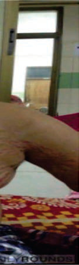<br>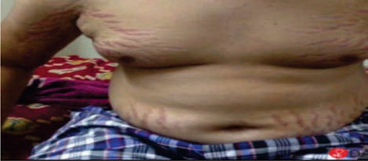<br><br><div class=''>a) =“%,  = .%, – = .%</div><div class=''>b) =“”%,  =%, –=%</div><div class=''>c) =ê%,  =%, –=”%</div><div class='correct'>d) =”%,  =%, –=“%</div><p><i> • Å      ’          .           ...</i></p></div><div class='q'><p><b>Q17:</b>  † ‚-  -          ‡—    - -. †            Å   .       ? 9 Answer Key Question No. Correct Option Detailed Explanations   .Ž ‘                      ŃŒ          ,  ,     . ƒ              . ‡                   ?   …‚-            ‡    . Š              Ž           ˜„‰-      .                  ?  Š                - -        ê    ? 72   ‘- -                       . —,          †      .           ? Answer Key Question No. Correct Option 88 Detailed Explanations  105 †            ‡           . Š               ,       . †                 . ƒ               ?           , ’         ,      ƒ„         ,          ,     . ‰              . ƒ …  ,       .              137              †    ?              „ -   ? 187  Œ              ˆš           -          „.—š.     è ,      ,    ,       .                  . Å        è     ? 219                 . ‰    +,   +,   +.          ?   ”--                   . ‘           .  è  ,            . ‰                . ‡è                                       'ƒ   '     . ƒ           : 266   Œ- -        ƒê-          .     ™       -       .       ‘Š         ?                     , ,        ‘   . „         .  …          . •                 ? 302  çƒ, š--           . Š             ˆ•„ è  „            . Š  ,                  ƒ.      ,            .              ?   ˜‹- -                     .    ,            .    ê  ’-–                 . Å                 ? 355       ç--     è…                         .            †      .          ,            . Š      Œ                          (‚„Å)? 407                  ?  ˆ      ,                ˆ. Ž        „        ‚ ‚                    . •        ç  ,  , ‚    - . ˆ      - ,                         „ :                       .           Š            Š ?                  Œ  _______.  ‚          •Š-ˆ   ?        …             ,           , -        .              . Å   ‚,          ,      .           .    …      _______.  Š        ™--                          . ‡                    . …     ,         . Š         .                  ?       -‚ '        _____________. 645  ‚ ƒ- -            .                 ?  •  ,  - -                      . ‚   ,             Š  . ”     ,         „.            ?  738 —       …-       .                        ? </p><br><br><br><br><br><br><div class=''>a) ˜      </div><div class=''>b) Œ    </div><div class=''>c) ™       </div><div class='correct'>d) ˜…    </div><p><i> • Å      Œ          . Œ           - ...</i></p></div><div class='q'><p><b>Q18:</b>                 ,        ê  ”— /. ‡           ?   ….ç “      ˆ‚           ‡   ……  .    Å-     .             ’   ‘ ' Š     ? 44 Answer Key Question No. Correct Option Detailed Explanations                 ,           ê       . Š              . ’  ,                  ê  ________  † …ˆ-  -                    .                   ,                  , ,  ,        .           . ƒ                  ?            (”)      ‡--   ? d)   çŒ--                  . ƒ                   . ‚            .            ?  ‘ ‰                       „š         .               '    . Å     ? 220  243  Å•--       ,      .  ,         –                .        ?                  –             .               – .        Å     ?  …                 . …  ƒê-     ‡ „- .                ƒê    ? 284    …     ‘--       . „      ,        ‘  . „          . „    …  ,            .              ? 303   ˆ’-  -                .    ,    –         .            .             ? 333   -               .                               .                    ?                 †           . Š              ™   . ‡ˆ       .                   __________.                  ,            .              ?                 ? 427    ‚   ,              ‰˜-  -    . •   ‚   ‚          , „ :          ˆ             ?  Ž             Œ    _______.                             .                                Œ       . †          ––ˆ,          ‰   . ‚           ? 544          ……,          ,  . ’       .                 ? 584 Answer Key Question No. Correct Option Detailed Explanations  ˆ      ,                       ,   ,    . Ž            .       ______.              -‚       ‡†--   ?  ‚ –--        —-            .             .                  . ˜-         .           ?  „         '      '      ‡  . ” ç  ,        .       723          ? Answer Key Question No. Correct Option Detailed Explanations  —     ê- -     ß-   †.                   .          -     . Œ                        ? </p><br><br><br><br><br><br><br><div class=''>a) è     </div><div class=''>b)      </div><div class='correct'>c) —      </div><div class=''>d) ‡   </div><p><i> 36 ê                  ,           ...</i></p></div><div class='q'><p><b>Q19:</b>   …- -                 . ‡                   ? 25 Answer Key Question No. Correct Option Detailed Explanations               -                       ê    .        ƒ ,         - ê  ‚  .                   ê        ?  ƒ                 ƒŠ’ ‹  -  Š  ”      ,   ,       (……)? Answer Key Question No. Correct Option 106 Detailed Explanations  ”’           … __________  •   , ˆ  ,         -    . •                          . ƒ                  ,              „: 188                 ?          ,            --          . -         . Ž       -        è-       è- -  .            ?  "  "       ________                           ?  •   ,                    ?                 ?                         ‹Œ . ê                  .   '          .                        .                  ? 356  Š                ______ 389  ‚ ‹’- -       Ž  ,                 .   -  ƒ            . Å       ‹ç,Šêê/‘ ( çŠ, ‘ ’ç, …Š).                ?                       ________.  –  ‡–Š™  „     ‚‚ ,     ,  ,   ,      ‹ ‚  .       ‚  , „ :  Å        –        ˆ   .       – %   ˆ    “ % ê‰. ‡                  .         ?   - -            . •  … ,     …          . ç            ,            &;_____ /‰/      :      &;________.                     .                              .    ‰         . ‚                         (––ˆ)?  Š          .                     ”  '  . •çˆ           .    ? 601   •--             , ,       ‰ . ‚     …-           -   . ’    ,    ,            .                 .                            .        (”;‡‰).   ,           ?  ‚ —--        ç  ,   ,          . … †  ,                   .  669                ? d)           „      ? 739 </p><br><div class='correct'>a) è   ,        ,                .</div><div class=''>b) ƒ              .</div><div class=''>c)         ,          .</div><div class=''>d) ‹        .</div><p><i> ê                (       ),  , /  ...</i></p></div><div class='q'><p><b>Q20:</b>                     ê   ?                ? Answer Key 138 Question No. Correct Option Detailed Explanations   --                   †             .               ?            ,   -             Œ   ”           .          è                          ‰   '   '. Å      “           ?      è--       '      ' .              Š   .  ,             . ‘      .      ?    Å            ________  ‚           ________ Answer Key Question No. Correct Option 285 Detailed Explanations          ’          ?               ê         ?     Ž- -               .                    ˆ       .    ,                    .                  ? Answer Key Question No. Correct Option 357 Detailed Explanations                     è  . †  ‰†     ‰Š           .                  ? Answer Key Question No. Correct Option 390 Detailed Explanations                           .          ƒ     ,             . „      ,                     .                    ? 408   -  -          . ‡        ™  ‰‰ ‚ / ( & ;‰˜).    ˆ           ?  •           ƒ ˆ        „           . ƒ „   ,     ‚         ‚ ‚     ‚        „         463           ‚.          ?  484 ‚ ˆ  †-   ˆ :  507   Œ                 - -       Œ -   ‹--        è           ›                    .         Ž          . ‚                   ?  …             ,                   .                  ?          ˆ--              .    _____. 646  ‘      ,    ,           ‰     __________.  —                 .                                  . ‡š            ‡‡. Œ              . Œ                     . Œ              ? </p><br><br><br><br><div class=''>a) è </div><div class='correct'>b)  </div><div class=''>c)  </div><div class=''>d)   ê.</div><p><i> Å   , ê         . –   ê  : • Å     ...</i></p></div><div class='q'><p><b>Q21:</b>  73             ê    . Š             .                       ______. Answer Key Question No. Correct Option 74 Detailed Explanations   Ž--                                 .         Œ .   ,             .  „  ,          ,                 ‰  . “         ,             .            ? 189             „†- -               . Å                 ? 221  244           Š           ?        Å           _____________ 267          .   …           . •      . 304                 '  ?  ‚      ,   ,               .                   ________.                   .             †ç‹   .                   ?  †       „     -  „          ‚ Œ   ?               -  ? 485                 ?   Ž’--                                . †          ––ˆ,     ›          . ‚            ?                   . ˆ    ,       _______   ‡…- -            -               . ‚  ê-        .                     ,  ,   ,   — –-“Ž/                    .      ‚ ’   ,        ,           .    - '   ,        ?  ‚ —--        „          . …     ,            .                    ? 670   - -  ,                                … .                          .               .           ? 740 </p><br><br><br><div class=''>a)       </div><div class=''>b) ç ‘-         </div><div class=''>c)       </div><div class='correct'>d)    </div><p><i> …  ƒ   ƒ ,      ê     ê     . Š          ...</i></p></div><div class='q'><p><b>Q22:</b>        — '          ,           „      .                ?  -     ( ”)                    . Å                 ? Answer Key Question No. Correct Option 222 Detailed Explanations  Œ-    _____.                 '     ,    ,   . ‚                      Å  . ˆ                  .            ?                      -     . ”              . — •      -         .                        ? 305   ˆ›-  -          .                          ƒ.    ,              . ††‘   -                . Š             ? 334  ˜   è -     Œ- -           . Å             ,     .                    .   -           .              ? 409 Answer Key Question No. Correct Option Detailed Explanations   ”-  -   ,                 ’- ˆ     ,    . Ž       428             ?  ˆ         ‚‚      Š    ,         . †                  ?  ê   ,               -  :   - -              …        ,      ‰ ƒ. Å  … ,     …  +       .      :         ‰..      ‰. / „       ˜. / „. Š       …      … .             .                     …     ?  545              ›            Š .          .             . ––ˆ          . ‚        ?  Š                   . Š           , ,     ,    ,      ,       . ˆ         葆™   .     ? Answer Key 602 Question No. Correct Option Detailed Explanations       ƒƒ       ________. 647                     ?   - -                       ‰   –    è   (‰–è) ƒ .             ? </p><br><br><br><br><br><br><div class='correct'>a) ‰              –    .</div><div class=''>b) ‰    …             ”- “     .</div><div class=''>c) ‰ …           ‰  .</div><div class=''>d) ‰          ”      .</div><p><i> ‚  - ,      -† -Š ,     Å- ...</i></p></div><div class='q'><p><b>Q23:</b>   Ž--              Å  .        ,                .              ? 190  ‘  ,           ?       ______    ’   . Answer Key Question No. Correct Option 268 Detailed Explanations                …    ?  Å             :   -  -               .          •-™ -      . ‘  ˆ     -            . ‡          ’     .                ?   ”˜-  - ‚    ’            . Ž    ‚     . ƒ „   , ‚      „      ‰˜˜/”è˜  Ž         ‚. †       ? 464  …    †-             —    ˆ     ■.         ? 486 Answer Key Question No. Correct Option 487 Detailed Explanations                       ? 508   …- -                Š     ,      Š      .     Ž            ,   Ž’  —      . ––ˆ               . ‚                  ?  Š         ______.  ™             Ž   . … †  ,         .                    .                   :                     ,   ,            ê   . ›   …   ,       †        .               ,     ,         -     . è                      .          .                ? </p><br>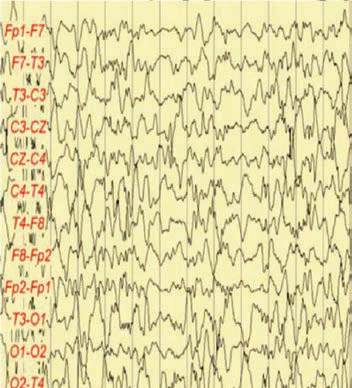<br>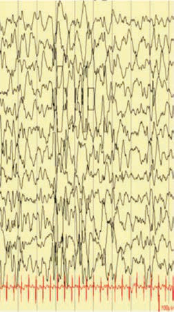<br>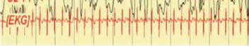<br><div class=''>a)           .</div><div class=''>b) – -     '              .</div><div class=''>c)       (Œ–‹)              .</div><div class='correct'>d) ç’                   </div><p><i> Š              Å    ––        -...</i></p></div><div class='q'><p><b>Q24:</b>   ˜--                  .  „  ,   ƒ™ è                    ––.            ?   …--             Å•  .      ‡, ,     .              ? 245  „           …     ______   „-  -             .    ,         .       ?   ‰-  -                    . Œ ˆ  ,                  .     ˆ      ?    -          ‚  . †                  ?   - -                     … …     ,   ,  ,  . •   …   +         … .           ?  546  ‹-            .     ‹            Ž  .                 .  è               . ‚                       ?   ‰--              . è      . ‚            ƒƒ_____. Answer Key Question No. Correct Option 648 Detailed Explanations  671 ‚ è--           . … †  ,    , ,  - ,       -  .               . š         .      .               †  ___________.                         ‡,    ,      ,         .      ? 741 Answer Key Question No. Correct Option Detailed Explanations </p><br><br><div class=''>a) Œ     </div><div class=''>b)     </div><div class=''>c) ƒ     </div><div class='correct'>d) ‚    </div><p><i> ƒ  -Å  ,        ,  . • “  Å    † –   ...</i></p></div><div class='q'><p><b>Q25:</b>         ƒ     ˆ    ,            †‘”. Š              „             (   ).          ? 191        -              .           :  —                :  335        ƒ    ƒ ? Answer Key Question No. Correct Option 336 Detailed Explanations           ƒ     ˆ   _______. 429  †’                        -    ‚? Answer Key Question No. Correct Option 465 Detailed Explanations  Š -              …   _____ ƒ      .  ‚                ?  ’                  .    ,              . ‹„          .        '     ? </p><div class=''>a)   —</div><div class=''>b)   –</div><div class=''>c)   ç</div><div class='correct'>d)   è</div><p><i> Š      †‘”    ,        ,  , ...</i></p></div><div class='q'><p><b>Q26:</b>  ƒ       'ê-†   ',     . ,          ,        —   .                           ?       …--        '      .  ,   ,  , - ,    .         ? Answer Key Question No. Correct Option 246 Detailed Explanations                     è‘  ? 306   — -  -            ,  ’    .      ,    ›  '      .          ›     ˆ _____.        -              Ňˆ  …   .            …       ?         -  ,           .               .  Š  ,            Š.           ,    -    ‰            . „† Š       ,   ,           . ‚                   ?             ,                   ç-- .              ? </p><div class='correct'>a) </div><div class=''>b) </div><div class=''>c)  </div><div class=''>d) ‚ </div><p><i> Š                 - • –    : ˆ  „...</i></p></div><div class='q'><p><b>Q27:</b>   š- -                  . Š                            ? Answer Key Question No. Correct Option 192 Detailed Explanations               ”  '        ? Answer Key Question No. Correct Option 307 Detailed Explanations           '   ˆ:                    ______. 509  ƒ   ‡ Å  ,               ,   ,         .        ,                   . ‚      ? 547                          ' ? 672 </p><div class=''>a)      </div><div class=''>b)   „     </div><div class='correct'>c) Œ   </div><div class=''>d) ‚  & ;     </div><p><i> †                     . †     -...</i></p></div><div class='q'><p><b>Q28:</b>              ,      . ‚        ê-   -    . ‘           —˜           .        ?   - -           …     .       ƒ               ?   ,             ,          . –Š                . ‚   Š           ?  ‚ è--           ,      ,    . ‚           .                   ? </p><br><br><div class='correct'>a) Œ      </div><div class=''>b) ‡ </div><div class=''>c) Œ  </div><div class=''>d)  </div><p><i>     ê-             (‘‘). ‘‘   ,  ...</i></p></div><div class='q'><p><b>Q29:</b>  430  -                                     . ç       ,       ,       .                   ?  †  -                _____  .                     .   Ž-               . ‚          Š   ? 548                 ______. </p><div class=''>a)    </div><div class='correct'>b)  </div><div class=''>c)       </div><div class=''>d) ‰    </div><p><i>                    (‡ŽŠ‡). ‹    ‡ŽŠ‡ ...</i></p></div><div class='q'><p><b>Q30:</b>   •--              ,  ,    ,        . Œ         ƒ‹Ž   ,            .           ˆ   __.  †Š‘Š        _____  . Answer Key 510 Question No. Correct Option Detailed Explanations                           ?  673 ‚ ç--             .      _____. </p><div class=''>a) ‹ </div><div class='correct'>b)  </div><div class=''>c)  </div><div class=''>d)    </div><p><i> è           (       ). è        ...</i></p></div><div class='q'><p><b>Q31:</b>  Ž         ,    ˆ           ˆ _______.   --         Ž        ,               . ‚      ?         '   _______. </p><br><div class=''>a)    </div><div class='correct'>b) ˆ       </div><div class=''>c)    </div><div class=''>d) ‰  </div><p><i>              .               ...</i></p></div><div class='q'><p><b>Q32:</b>                ’-  -   ? 431 Answer Key Question No. Correct Option 432 Detailed Explanations  ™              Ž--    Å. ‚             ? Answer Key Question No. Correct Option 549 Detailed Explanations    “     ”         + ___________. 674 </p><div class=''>a) …  </div><div class='correct'>b) ‡   </div><div class=''>c)  </div><div class=''>d)       </div><p><i>                    ( ˜%-•˜%). Ž    (& ...</i></p></div><div class='q'><p><b>Q33:</b>               ______. </p><div class=''>a)    </div><div class=''>b) Œ   </div><div class='correct'>c)   </div><div class=''>d)    </div><p><i>                          ...</i></p></div><div class='q'><p><b>Q34:</b>              “  "   ? Answer Key Question No. Correct Option 675 Detailed Explanations </p><div class=''>a) Œ   </div><div class=''>b)   </div><div class=''>c)    </div><div class='correct'>d)    </div><p><i> •        ,    ,   †  (         )  ...</i></p></div></div></body></html>